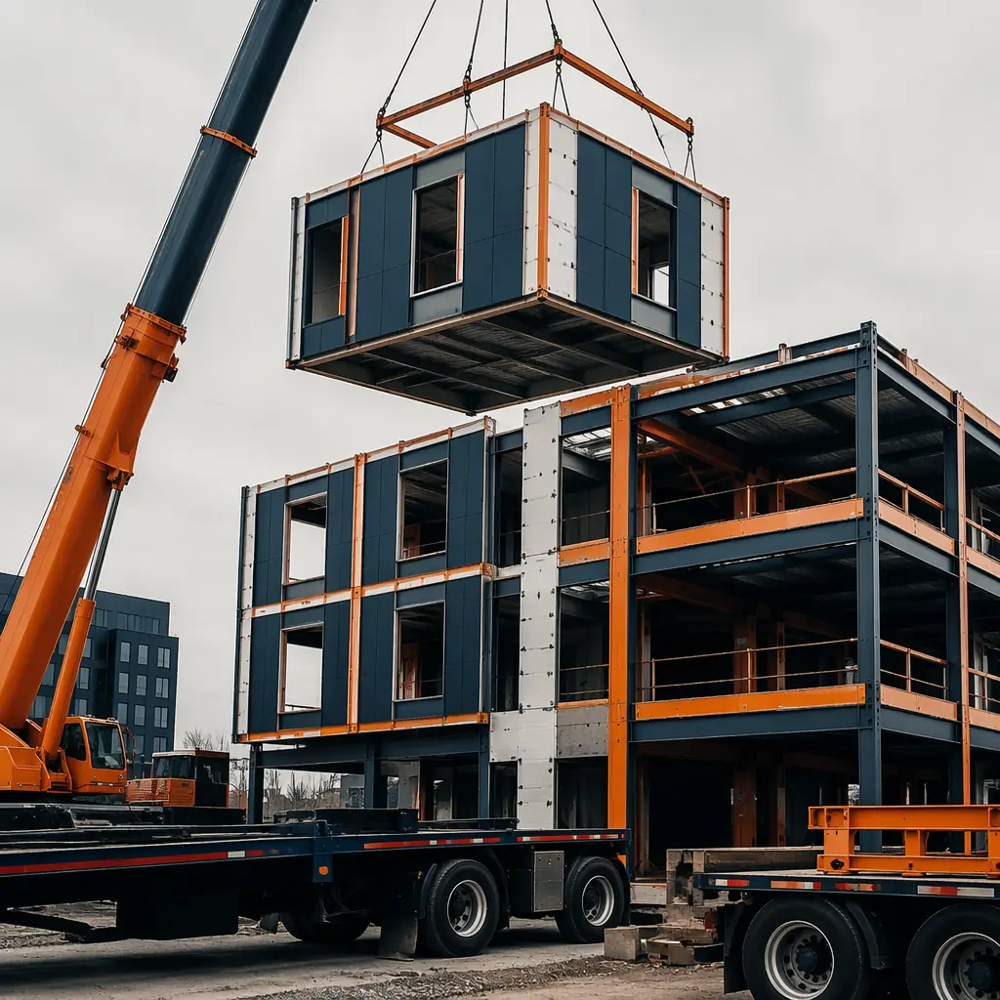
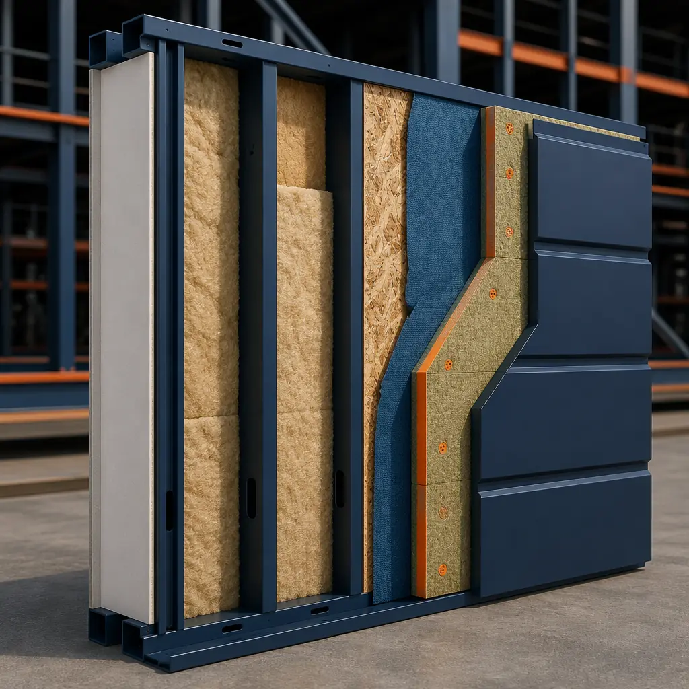
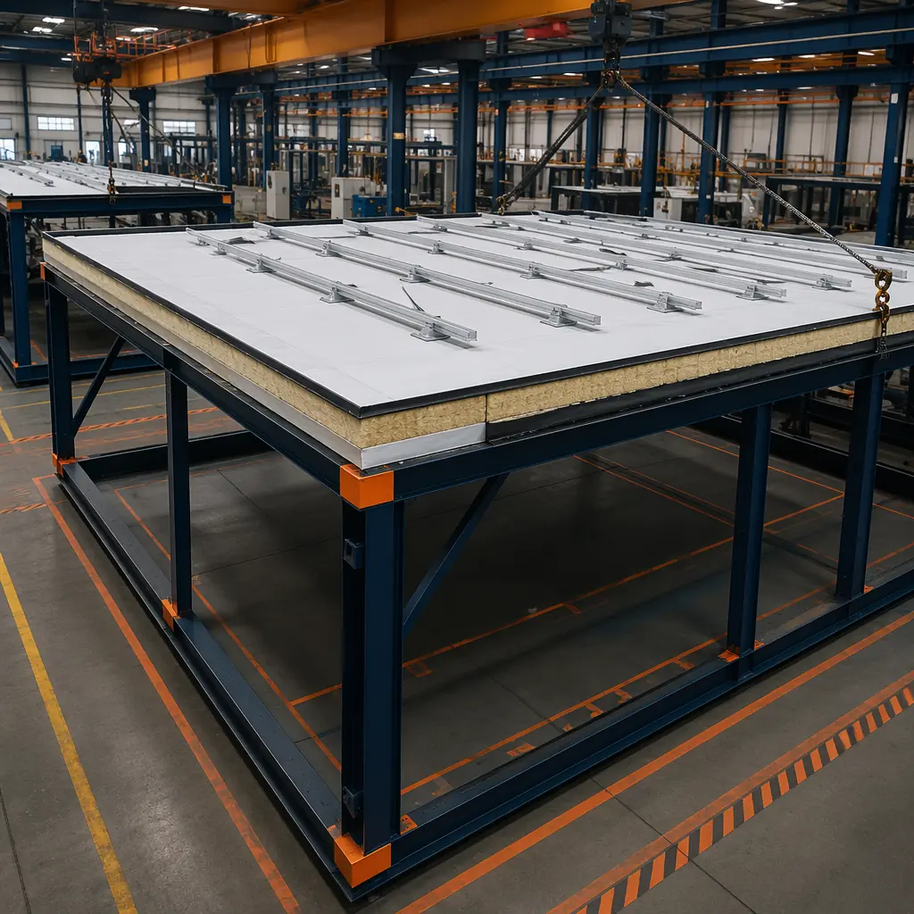
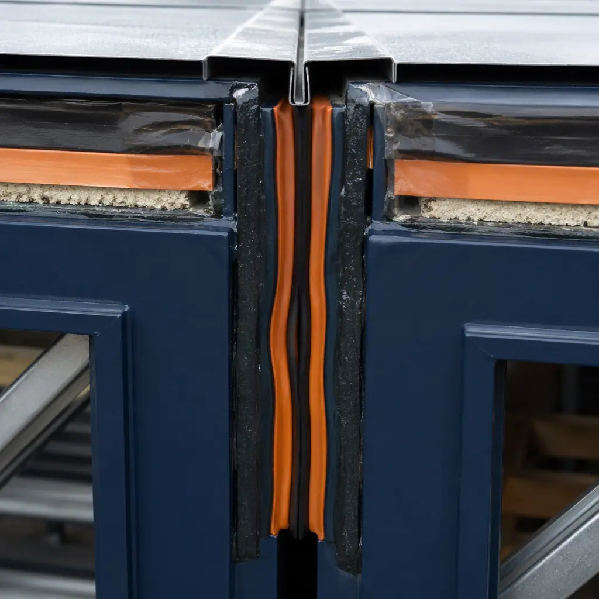

The building envelope — the physical separator between conditioned interior space and unconditioned exterior environment — is the most performance-critical system in any structure. It governs thermal performance, air leakage, moisture migration, and long-term durability. In conventional construction, the envelope is assembled on site by multiple trades working in sequence over weeks or months: the framer erects the wall structure, the insulator fills the cavities, the cladding installer attaches the exterior finish, the roofer installs the roofing membrane, and somewhere in between — or not at all — the air barrier and weather-resistant barrier are integrated across these separate scopes of work. The result is an envelope assembled in uncontrolled conditions by disconnected trades, with performance gaps at every transition between scopes. Modular construction eliminates this fragmentation. The entire building envelope — walls, roofing, weather barriers, air barriers, insulation, and cladding — is installed in a factory, as a continuous system, by a single production team, before the module ever reaches the site. This article explains how modular building envelope systems are engineered, what performance levels they achieve, and why the factory-built envelope represents a step change in building enclosure performance.

What the Building Envelope Means in Modular Construction
In conventional construction, the building envelope is the sum of materials and assemblies installed by five or more trade contractors — framers, insulators, cladding installers, roofers, and waterproofing applicators — coordinated by a general contractor who is managing scope boundaries that are themselves the primary source of envelope performance failures. The transition between the wall air barrier and the roof air barrier, between the wall cladding and the window flashing, between the roof membrane and the parapet cap flashing: these transition details are where water penetrates, where air leaks, and where thermal bridges form. They are also the details that fall between the defined scopes of individual trade contracts, which means they are the details most likely to receive inadequate attention during construction.
In modular construction, the envelope is not assembled on site by disconnected trades — it is assembled on a production line by a team that is responsible for the entire module, from structural frame to finished interior. The walls are built flat on jigs, the insulation is installed before the interior finishes, the weather-resistant barrier is applied continuously across the module exterior, and the cladding is attached in a controlled environment where access is unrestricted and weather is irrelevant. The roof assembly — whether a flat membrane roof, a sloped metal roof, or a solar-ready roof system — is installed in the factory with the module in a position that makes every detail accessible. The module-to-module joint, which is the only envelope transition that occurs on site, is engineered with factory-installed gaskets, sealant receiving channels, and flashing that are designed as a system, not improvised by the site crew.
The practical consequence is that a modular building's envelope is substantially complete when the modules arrive on site. The site scope is reduced to connecting the module joints and tying the module roof assemblies into the building's overall roofing system — work that represents perhaps 5–10% of the total envelope scope, compared to 100% for conventional construction. For the broader implications of this factory-first approach across all building systems, see our guide on modular turnkey construction.

Wall Systems: Steel Frame + Continuous Insulation + Multi-Layer Cladding
The modular wall assembly starts with a structural steel frame — typically cold-formed steel studs at 16 or 24 inches on center, with a gauge and depth sized for the module's structural requirements and the project's fire-rated assembly schedule. Unlike site-built walls, which are framed in place after the floor deck is poured, modular walls are assembled flat on precision jigs in the factory, which means every stud is placed at its designed spacing and every opening is framed to within ±3mm of the specified dimension.
The wall assembly typically includes the following layers, installed sequentially in the factory:
- Exterior sheathing. Glass-mat gypsum sheathing or cement board is mechanically fastened to the exterior face of the steel studs, providing a substrate for the weather-resistant barrier and contributing to the wall's shear resistance. The sheathing joints are taped or sealed as part of the air barrier system — a step that is frequently omitted in site-built construction because the air barrier is a separate scope from the sheathing installation.
- Continuous insulation (CI). Rigid mineral wool or polyisocyanurate insulation board is installed outboard of the sheathing, creating an uninterrupted thermal layer that eliminates the thermal bridging through steel studs. Steel studs have a thermal conductivity approximately 300 times higher than insulation; without continuous insulation outboard of the studs, the wall's effective R-value can be reduced by 50–65% compared to the cavity insulation's nominal R-value. Continuous insulation is the single most important design decision in a modular wall assembly's thermal performance, and it is installed in the factory where board joints are staggered, fasteners are thermally broken, and the entire CI layer is verified for continuity before cladding is attached.
- Weather-resistant barrier (WRB). A fluid-applied or sheet-applied WRB is installed over the continuous insulation or directly to the sheathing, depending on the assembly design. The WRB is lapped and integrated with window and door flashings at the factory, which means these critical leak points are detailed in controlled conditions by a single installer, not passed between the framer, the window installer, and the cladding contractor.
- Cladding options. The factory-installed wall assembly accepts multiple cladding types, selected based on the project's architectural requirements, climate zone, and budget:
- Metal panel systems. Insulated metal panels (IMPs) or single-skin metal panels on hat channels provide a durable, low-maintenance exterior with a contemporary aesthetic. IMPs combine cladding, insulation, and air barrier in a single factory-fabricated component.
- Fiber cement siding. Factory-installed fiber cement panels or lap siding provide a traditional architectural appearance with the durability and fire resistance of cement-based materials.
- Brick veneer. Thin-brick systems, installed on a steel angle support at each floor line with wall ties back to the structural studs, provide the appearance of full masonry at a fraction of the weight and with significantly faster installation in the factory environment.
- Curtain wall and window wall systems. For projects with high glazing percentages, unitized curtain wall systems are factory-glazed and installed in the module, with inter-module mullions designed to accommodate module-to-module installation tolerances. The glazing-to-module interface — the most leak-prone detail in any curtain wall building — is fabricated in the factory, not sealed on a swing stage.
For projects in extreme climates, the same factory wall assembly can be adapted with additional insulation thickness, vapor-retarder membranes, or rain-screen cavity design. The assembly remains fundamentally the same — what changes is the specification of individual layers, not the construction sequence that introduces gaps between them. For a deeper look at how these assemblies perform in severe weather conditions, see our article on modular coastal and flood-resistant construction.

Roof Systems: Flat Membrane, Sloped Metal, and Solar-Ready
Modular roof assemblies are factory-installed on each module before it leaves the production line, which means the roofing trades work on a module that is at floor level, under a factory roof, with unrestricted access to every edge, penetration, and termination detail. This is the opposite of site-built roofing, where the crew works on an elevated deck exposed to wind and weather, racing the clock to achieve temporary dryness before rain compromises the insulation below.
Three roof system types dominate modular construction:
- Flat membrane roof. The most common modular roof system, particularly for multi-story buildings where the roof is not visible from grade. A TPO (thermoplastic polyolefin) or EPDM (ethylene propylene diene monomer) membrane is fully adhered or mechanically attached to a cover board over polyisocyanurate insulation, which sits on a steel roof deck welded to the module's structural frame. The factory installation eliminates the two most common flat-roof failure modes: incomplete membrane adhesion at lap seams (because the lap is heat-welded in controlled conditions with no wind or dust contamination) and ponding water at low spots (because the roof deck is installed on a jig that ensures positive drainage slope). At the module joint, the roofing membrane is terminated with a factory-installed clamping bar and the joint is sealed after module connection — a detail that accounts for the only field scope in the entire roof system.
- Sloped metal roof. For projects with visible roofs — single-story buildings, gable-ended modules, or architectural roofs — a standing-seam metal roof system is installed on a sloped steel deck with continuous insulation below. The metal panels are factory-formed and installed with concealed clips, which eliminate the exposed fasteners that are the primary leak source in site-built metal roofing. The ridge, eave, and gable trim details are fabricated and installed in the factory, where the interface between the metal roof and the wall cladding can be detailed as a continuous weatherproof assembly rather than two separate contractor scopes that meet at the eave.
- Integrated solar-ready roof. An increasing number of modular projects specify roof assemblies designed for future photovoltaic (PV) installation. The roof structure includes reinforced mounting points at the module's structural frame, electrical conduit stubs that are factory-run from the roof to the module's electrical panel, and a roofing membrane that is compatible with ballasted or mechanically attached PV racking systems. The incremental cost of solar-ready rough-in is modest when it is integrated into the factory production sequence — adding conduit and structural blocking to a module that is being built on a jig costs far less than retrofitting a completed building for solar.
The module joint is the only roof detail that cannot be factory-installed, and it is the detail that modular manufacturers design most carefully. For the structural connections that support these roof assemblies, see our article on modular building foundation systems.

Weatherproofing at Module Joints: The Critical Detail
The module-to-module joint is where the factory-built envelope meets its site-assembled counterpart. It is the single most important weatherproofing detail in modular construction, and it is the detail that separates high-performance modular buildings from those that experience water intrusion at module interfaces. The joint must accommodate three simultaneous demands: it must be weather-tight against wind-driven rain and standing water, it must accommodate the dimensional tolerances of module placement (typically ±5mm at the joint), and it must allow for thermal movement and building drift while maintaining seal integrity over the building's service life.
The modular envelope joint is not a single sealant bead — it is a multi-layer system that provides redundant protection:
- Primary seal: compression gasket. Each module is factory-fitted with an EPDM or silicone compression gasket along its mating edges. When modules are positioned and connected, the gaskets from adjacent modules compress against each other, forming a continuous primary weather seal. The gasket profile is engineered to maintain contact pressure across the full range of module-to-module gap variation, typically 5mm to 15mm. Unlike a field-applied sealant bead, which relies on the installer's skill and worksite cleanliness for adhesion, the compression gasket is factory-installed on a clean surface with controlled adhesive application.
- Secondary seal: exterior sealant joint. A low-modulus silicone or polyurethane sealant is applied to the exterior face of the module joint after the modules are connected. This sealant provides a secondary water barrier and protects the compression gasket from UV exposure and weather. The sealant is installed over a backer rod that controls the sealant's depth-to-width ratio, ensuring the sealant can accommodate joint movement without cohesive failure.
- Flashing and drip edge. A metal flashing cap is installed over the exterior sealant joint to deflect bulk water away from the joint and to provide a finished architectural appearance. At horizontal joints (floor-to-floor module connections), the flashing is designed with a drip edge that prevents water from tracking back into the joint by capillary action.
- Internal drainage plane. In cavity-wall assemblies, any water that penetrates the exterior cladding is directed down the drainage plane behind the cladding and exits through weeps at the base of each module. The module joint includes a factory-installed flashing at the drainage plane that directs water from the upper module's cavity to the lower module's weeps, preventing water from accumulating at the module interface.
The joint detail is a reflection of the modular construction philosophy: the elements that require precision and controlled conditions are factory-installed (the compression gasket, the internal flashing, the drainage plane components), while the elements that must accommodate site conditions and module placement tolerances are field-applied (the exterior sealant and the cosmetic flashing). The system is designed so that field work cannot compromise the primary weather seal — even if the exterior sealant fails, the compression gasket behind it maintains weather-tightness. For the seismic performance implications of these connections, see our article on modular seismic design and earthquake-resistant construction.
| Envelope Performance Metric | Modular (Factory-Built) | Conventional (Site-Built) |
|---|---|---|
| Wall R-value (typical) | R-30 to R-40 effective | R-13 to R-21 effective |
| Air leakage (blower door, ACH50) | 0.10–0.20 ACH | 0.30–0.70 ACH |
| Thermal bridge elimination | Continuous insulation outboard of steel studs | Cavity insulation only; studs = thermal bridges |
| Air barrier continuity | Factory-installed, verified per module | Assembled from multiple trade scopes |
| Moisture during construction | Zero weather exposure — built indoors | Rain/snow exposure before enclosure |
| Window flashing integrity | Factory-integrated with WRB; tested per window | Field-installed; installer-dependent quality |
| Roof installation conditions | Indoor, level, weather-independent | Elevated deck, weather-exposed |
Thermal Performance: The Continuous Insulation Advantage
Steel framing is an excellent structural material and a terrible thermal material. A cold-formed steel stud has a thermal conductivity of approximately 45 W/m·K, compared to approximately 0.035 W/m·K for mineral wool insulation — a ratio of roughly 1,300:1. In a site-built steel-framed wall with cavity insulation only, the steel studs act as thermal bridges that bypass the insulation, reducing the wall's effective R-value by 40–65% compared to the insulation's nominal R-value. ASHRAE 90.1 and the International Energy Conservation Code (IECC) have recognized this problem for decades and require continuous insulation outboard of steel studs in most climate zones — but the requirement is inconsistently enforced in site-built construction and frequently value-engineered out during cost-cutting exercises.
Modular construction makes continuous insulation the default, not an upgrade. The wall assembly is designed from the start with CI outboard of the structural studs, because the factory production sequence makes CI installation straightforward: the wall is assembled flat on a jig, the sheathing is applied, and the CI boards are laid over the sheathing with staggered joints and thermally broken fasteners — all before the wall is tilted up and integrated into the module. The result is a wall assembly that achieves effective R-values of R-30 to R-40 in typical configurations, compared to R-13 to R-21 for a site-built steel-framed wall with cavity insulation only:
- R-30 wall assembly. 2x6 steel studs at 16" o.c. with R-21 mineral wool cavity insulation + R-10 continuous mineral wool insulation outboard of sheathing. Effective R-value: R-30 (accounting for stud thermal bridging of the cavity layer, with CI providing an uninterrupted thermal break).
- R-36 wall assembly. 2x6 steel studs at 16" o.c. with R-21 mineral wool cavity insulation + R-15 continuous polyisocyanurate insulation outboard of sheathing. Effective R-value: R-36. Suitable for cold climates (IECC Climate Zones 5–7).
- R-40 wall assembly. 2x8 steel studs at 16" o.c. with R-28 mineral wool cavity insulation + R-15 continuous mineral wool insulation outboard of sheathing. Effective R-value: R-40. Suitable for subarctic climates and projects targeting Passive House performance levels.
These R-values are achieved at a wall thickness that is comparable to or thinner than site-built assemblies delivering lower thermal performance, because the CI layer replaces the need for double-stud walls or deep stud cavities. For the energy cost implications of these thermal performance levels, see our article on modular building energy efficiency, which documents operating cost reductions of 30–50% relative to conventionally constructed buildings.
Air Barrier Continuity: How Factory Construction Eliminates Field Air Leakage
Air leakage is the most underappreciated building performance metric. A building that leaks air at 0.50 ACH50 (0.50 air changes per hour at a 50-pascal pressure differential, the IECC 2021 maximum for commercial buildings in most climate zones) loses approximately 30–40% of its heating and cooling energy to uncontrolled air exchange, regardless of how much insulation is in the walls. Air leakage also transports moisture into wall cavities, where it condenses on cold surfaces and supports mold growth, corrosion, and freeze-thaw damage — damage that is concealed behind finished surfaces until it becomes severe enough to be visible.
In conventional construction, the air barrier is assembled from multiple materials — sheathing, WRB, window flashings, sealant at penetrations, gaskets at door thresholds, membrane at roof-to-wall transitions — installed by multiple trades, with no single party responsible for the air barrier as a system. The blower door test, if performed at all, is conducted at substantial completion, after the walls are finished and the air barrier defects are inaccessible. A typical site-built commercial building achieves 0.35 ACH50 on its best day, and 0.50–0.70 ACH50 is common.
Modular construction changes the air barrier equation entirely. Each module's air barrier is a continuous assembly installed in the factory: the sheathing is the primary air barrier plane, the WRB is lapped and sealed at every penetration and transition, and the window and door flashings are integrated with the WRB before cladding is applied. The module-level air barrier is tested in the factory using a module-scale blower door or pressure decay test, which identifies and corrects leaks when they are accessible — before drywall, before finishes, before the module is enclosed. Modular buildings consistently achieve blower door results of 0.10–0.20 ACH50, which is 2–7 times tighter than code minimum and 2–3 times tighter than the best site-built buildings. At 0.15 ACH50, the energy penalty from uncontrolled air exchange is reduced to approximately 5–10% of total HVAC load, compared to 30–40% at 0.50 ACH50. This is not a marginal improvement; it is a category shift in building enclosure performance.
The only air barrier transition that occurs on site is the module-to-module joint, which is sealed with the compression gasket-and-sealant system described in the joint weatherproofing section above. Because the joint represents less than 1% of the total building envelope area, even a less-than-perfect joint seal has a minimal effect on the building's overall air leakage rate. The site air barrier scope is measured in linear feet of joint, not in square feet of wall area — and that is the difference between a building that leaks and a building that doesn't.
Moisture Management: Built Indoors Means No Weather Exposure
Moisture is the leading cause of building envelope failure, and the primary source of construction-phase moisture is weather exposure. A site-built wood or steel frame structure is exposed to rain, snow, and humidity for weeks or months between the time the frame is erected and the time the building is dried in (roof installed, windows installed, WRB applied). During that exposure period, framing lumber absorbs moisture, gypsum sheathing wets and loses strength, insulation gets saturated, and water accumulates in wall cavities and floor decks where it will remain trapped after the building is enclosed. The industry term for this is "built-in moisture," and it is the root cause of many of the mold, corrosion, and premature degradation problems that appear in buildings 3–7 years after construction.
Modular construction eliminates built-in moisture as a category of risk. The module is assembled indoors, in a climate-controlled factory where the relative humidity is maintained below 60% and no weather exposure occurs at any point in the construction process. The wood or steel framing never gets wet. The insulation is installed in dry cavities and remains dry. The gypsum board is installed in a dry environment and is never exposed to rain on a jobsite. When the module is transported to the site, it is wrapped in a weather-protective covering that prevents water intrusion during transport and staging. The module is placed on its foundation and connected to adjacent modules within hours of arriving on site, and the roof is completed within days — not the weeks of weather exposure that a site-built structure endures between frame erection and dry-in.
The moisture content of wood framing in a factory-built module typically measures 12–15% at the time of enclosure, compared to 19–25% for site-built framing that has been exposed to weather during construction (the fiber saturation point of wood is approximately 28–30%, above which free water exists in the cell cavities and decay organisms can become active). The difference between 15% and 22% moisture content is the difference between framing that will dry to equilibrium over the first heating season and framing that will remain at elevated moisture levels for years, supporting mold growth on the cavity side of the drywall that the building occupants will never see but will eventually smell. For the long-term durability implications of moisture-managed construction, see our article on modular building maintenance and lifecycle costs.
The building envelope is the building's immune system. In conventional construction, the immune system is assembled by five different contractors on five different schedules, and the first test of whether it works is the first rainstorm after the building is occupied. In modular construction, the envelope is a single integrated assembly tested before it leaves the factory, and the site scope is reduced to connecting the module joints. The difference in performance outcomes is not a matter of degree; it is a matter of category.